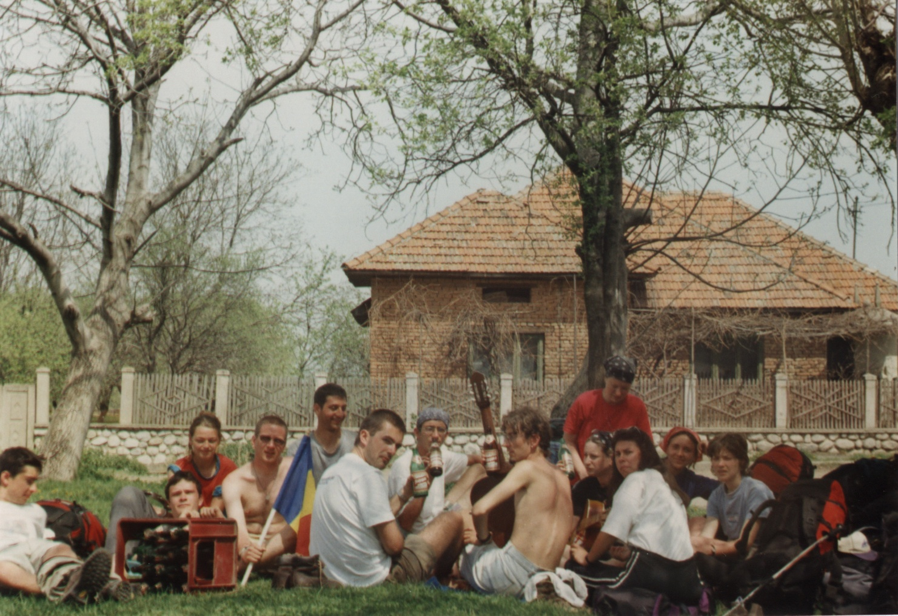

Affirmation and Stereotype Threat
The triple A's in my values: Achievement, Adventure, Accountabilty
07/10/15
During my schooling years up to my senior year I've been awarded first in class award (well, except for the 7th grade when a colleague snatched it from me, but I showed her the following year :D). This was the "achievement" part of my life. To date, I still have great achievements (eg: DevBootcamp), but it is all thanks to the foundation laid during my schooling years. Here's a goofy proof of those times:
During my college years I was fortunate to find about a great hiking group and I travelled a lot with them. These were the most adventurous days of my life. The picture below is just one of the dozens of trips we took:

Adult life came around and first serious job with it :). I was surprised to discover that I thrive in an unstructured environment and which offered me a lot of initiative taking and decision making opportunities. I had entered the "Accountability" phase of my life. Here's a pic for you to check: